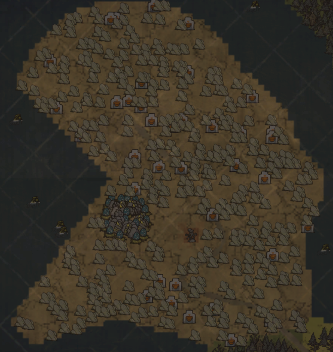
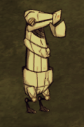

硫磺矿区
-探险队在永恒大陆的探索已经初见成效，我们发现了一片盛产硫磺矿的矿区，这足以缓解我们当前遇到的子弹不足的压力。
-不过，我们的老朋友十字神明已经先一步占领了这里，硫磺矿脉间夹杂着不少工厂和炮台，工厂正在夜以继日地生产着新的十字神明机械，这里似乎被改造成了一处战争工坊，除此之外，特异现象调查部在矿区深处侦测到了一股强大的信号，一位十字神明的预言者似乎盘踞于此处。仅从这里的样子，不难推测出它的身份，在不惊动它的前提下，试着先采集一些资源吧。
本mod新增的地形，自然刷新于森林世界。岩石地皮，内部含有大量硫磺矿与少量十字神明工厂，在地图上显示如下

资源
矿区内部主要的资源为大量分布的硫磺矿，挖掘之后掉落硫磺，石头，燧石和硝石，作为星野前期重要的火药来源，同时，击杀十字神明的单位之后还会掉落启动石和沃普赛克钢铁，同样是本模组重要的合成材料。
生物
冲击器
生命值：400
攻击力：50
行动AI类似于发条骑士，但是相较于发条骑士更加笨重，不会在受到攻击之后后退躲避攻击，每天自然刷新在十字神明工厂旁边，上限刷新两个。
击杀后必定掉落一个启动石，一个沃普赛克钢铁，有概率额外掉落一个沃普赛克钢铁
